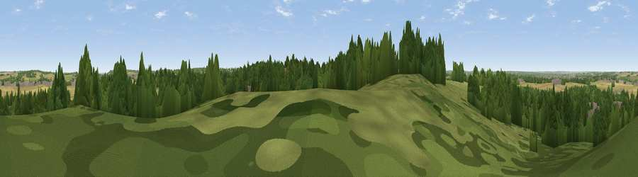

Viewpoint near Aspley Guise
#30560 in England · top 53% of its area beats it · near Aspley GuiseThe view, rendered

A 360° render of this exact spot computed from the terrain model, tree cover and land cover — summer colours, afternoon light, calibrated against photographs of famous viewpoints. Real trees, hedges and buildings will differ in detail.
The panorama
Grey silhouette: terrain skyline in each direction (720 bearings, Earth curvature and refraction included). Dashed green: skyline with trees (+15 m) and buildings (+8 m) as obstacles. Blue strip: how far the ground is visible on each bearing.
Where the view opens
Wedge length = distance to the farthest visible ground on that bearing (vegetation-aware). Rings at 10, 25 and 50 km.
What fills the view
40% woodland · 34% grassland · 20% cropland · 6% built-up
Angular shares of the visible panorama (visual magnitude), not map area. Landscape diversity 0.54 (0–1 Shannon).
Key numbers
More beautiful places nearby
The staircase of upgrades: each row has a higher view potential than everything closer. Driving times are estimates from straight-line distance, calibrated against real road routing — check an actual route before setting out.
| Place | Direction | Drive | Score |
|---|---|---|---|
| Viewpoint near Bow Brickhill | WSW · 3 km | ~8 min | 57.0 |
| Viewpoint near Sharpenhoe | ESE · 14 km | ~25 min | 57.6 |
| Viewpoint near Hexton | ESE · 16 km | ~29 min | 64.2 |
| Viewpoint near Church End | SSE · 17 km | ~29 min | 65.8 |
| Beacon Hill | S · 19 km | ~33 min | 74.1 |
| Viewpoint near Halton | SSW · 27 km | ~43 min | 74.3 |
| Coombe Hill Monument | SSW · 31 km | ~48 min | 75.5 |
| Viewpoint near Meon Vale | W · 77 km | ~101 min | 77.0 |
52.01604, -0.63058 · source: screening · position refined by local search. Computed location — check access rights before visiting.